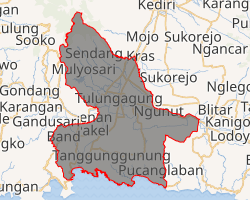
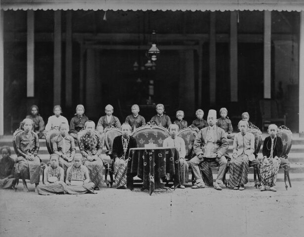
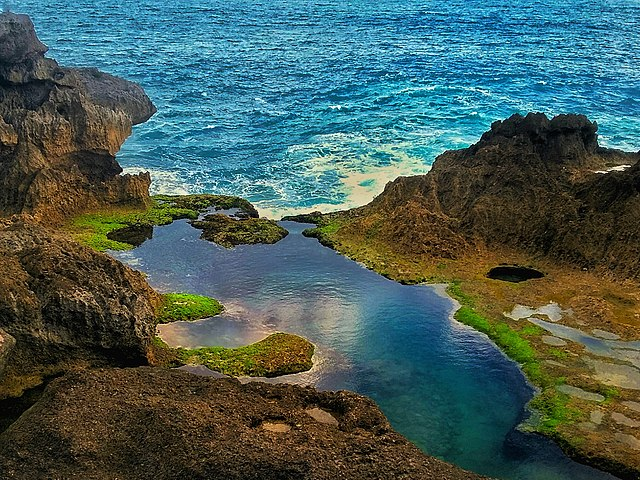

Geografi

Batas-batas wilayah Kabupaten Tulungagung secara administratif adalah sebagai berikut:
- Sebelah utara: Kabupaten Kediri dan Kabupaten Nganjuk
- Sebelah Selatan: Samudra Hindia
- Sebelah Timur: Kabupaten Blitar
- Sebelah Barat: Kabupaten Trenggalek dan Kabupaten Ponorogo
Secara topografi, Tulungagung terletak pada ketinggian 85 m di atas permukaan laut (dpl). Bagian barat laut Kabupaten Tulungagung merupakan daerah pegunungan yang merupakan bagian dari pegunungan Wilis-Liman. Bagian tengah adalah dataran rendah, sedangkan bagian selatan adalah pegunungan yang merupakan rangkaian dari Pegunungan Kidul. Di sebelah barat laut Tulungagung, tepatnya di Kecamatan Sendang, terdapat Gunung Wilis sebagai titik tertinggi di Kabupaten Tulungagung yang memiliki ketinggian 2552 m. Di tengah Kota Tulungagung, terdapat Kali Ngrowo yang merupakan anak Kali Brantas dan seolah membagi Kota Tulungagung menjadi dua bagian: utara dan selatan. Kali ini sering disebut dengan Kali Parit Raya dari rangkaian Kali Parit Agung.
Sejarah

Pada 1205 Masehi, masyarakat Thani Lawadan di selatan Tulungagung, mendapatkan penghargaan dari Raja Daha terakhir, Kertajaya, atas kesetiaan mereka kepada Raja ketika terjadi serangan musuh dari timur Daha. Penghargaan tersebut tercatat dalam Prasasti Lawadan dengan candra sengkala "Sukra Suklapaksa Mangga Siramasa" yang menunjuk tanggal 18 November 1205 M. Tanggal keluarnya prasasti tersebut akhirnya dijadikan sebagai hari jadi Kabupaten Tulungagung sejak tahun 2003.
Di Desa Boyolangu, terdapat Candi Gayatri. Candi ini adalah tempat untuk mencandikan Gayatri (Sri Rajapatni), istri keempat Raja Majapahit yang pertama, Raden Wijaya (Kertarajasa Jayawardhana), dan merupakan ibu dari Ratu Majapahit ketiga, Sri Gitarja (Tribhuwanatunggadewi), sekaligus nenek dari Hayam Wuruk (Rajasanegara), raja yang memerintah Kerajaan Majapahit pada masa keemasannya. Nama Boyolangu itu sendiri tercantum dalam Kitab Nagarakertagama yang menyebutkan nama Bayalangu/Bhayalango (bhaya = bahaya, alang = penghalang) sebagai tempat untuk menyucikan dia.
Wisata

Kabupaten Tulungagung diuntungkan dengan letak geografis yang berada di tepi Samudera Hindia, sehingga memiliki banyak pantai yang menarik untuk dikunjungi diantaranya Pantai Popoh, Pantai Sidem, Pantai Brumbun, Pantai Sine, Pantai Molang, Pantai Klatak, Pantai Gerangan, Pantai Sanggar, Pantai Gemah, Pantai Ngalur, Pantai Coro, Pantai Pacar, Pantai Lumbung, Pantai Dlodo, Pantai Pathok Gebang dan Pantai Kedung Tumpang.